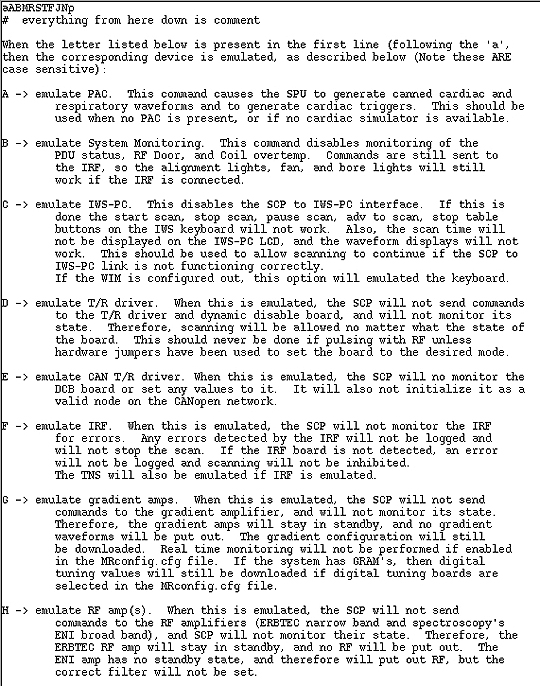
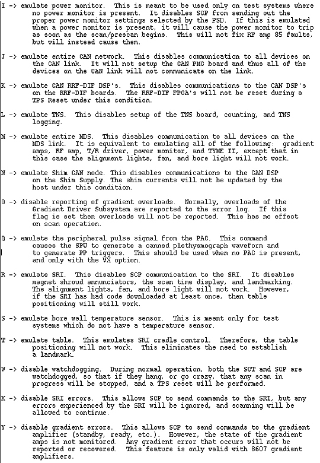
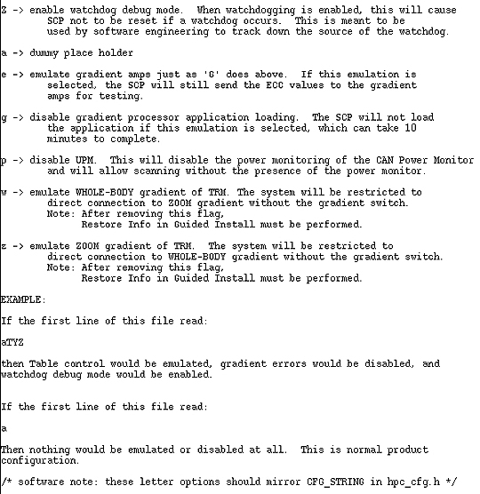
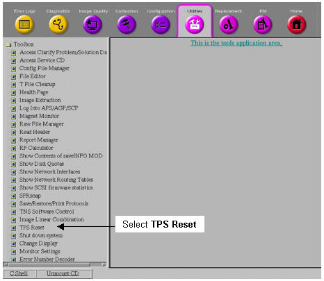

Operating Documentation
Direction 5133315-3, Rev# 14
Signa EXCITE HD 1.5T Service Methods
Module Version 1.0, Version Date 4/27/07
Operating Documentation |
Stage software allows the user to create a custom Signa software configuration suitable for use in software development or system servicing. This is done by custom-configuring the MGD (Multi-Generational Data Acquisition) subsystem. Emulation of MGD hardware, or functionality, is accomplished by editing the mgd_stage file. Emulation allows the system to run without specific hardware present, or specific functions activated; this may be helpful for problem isolation.
After editing this file, the emulation selections are applied to the system by downloading the TPS. After emulation is complete, the original mgd_stage file must be restored, and TPS downloaded to restore normal Signa Excite functions.
Some of the MGD functions and hardware controlled by the MGD can be emulated by using the gedit or vi text editor to modify the mgd_stage file. Gedit is an easy-to-use text editor (and is the recommended tool to use), and vi is a command-based editor.
The mgd_stage file is located in the /w/config directory. The first line in the file is the only one that is executed. The rest of the file text contains comments, plus a complete description of each emulation command. This same information appears in Illustration 1.
To customize the mgd_stage file:
From the Service Desktop, select [C Shell].
At the sdc prompt, type: <cd /w/config> and press <Enter>.
To edit the file, type either of these two options at the prompt:
<gedit mgd_stage> and press <Enter>, or
<vi mgd_stage> and press <Enter>
The Stage menu is displayed (see Table 1). Type the command letter(s) for the hardware you want to emulate after the a at the top of the file.
Illustration 1: MGD_STAGE EMULATION COMMANDS
(Sheet 1 of 3

(Sheet 2 of 3

(Sheet 3 of 3

To apply the emulation choices, save and exit the changed file.
Select [TPS Reset].
There are two ways to do this:
From the Service Desktop Manager, select the [TPS Reset] button, or
From the Service Desktop Manager, click on the [Service Browser] button, as shown in Illustration 2. On the Common Service Desktop, select the Utilities tab. On the menu at the left, select TPS Reset (see Illustration 3).
When the prompt “Do you really want to reset TPS?” appears in the right pane of the Common Service Desktop (or “WARNING: TPS Reset?” in the Service Desktop Manager), click the [Yes] button.
Illustration 2: Location of the Service Browser Button

Illustration 3: TPS Reset Option on the Utilities Tab

The letter a in the first line is a place holder and should not be deleted. The capital letters (commands are case-sensitive), which represent the desired commands, are entered immediately after (no space) the a place holder on the first line. After you save and exit the changed file, the TPS/ISE is reset to invoke the emulation. For example:
If the first line of this file reads: ATYz, then table control would be emulated, gradient errors would be disabled, and the watchdog debug mode would be enabled.
If the first line of this file reads: a, then nothing would be emulated or disabled at all. This is the normal product configuration.
Following completion of emulation, the mgd_stage file must be edited back to its original state using a text editor. This file is located in the /w/config directory.
To edit the file, enter either of these two options at the prompt:
<gedit mgd_stage> and press <Enter>.
<vi mgd_stage> and press <Enter>
Edit the first line in either file so it only contains the letter a (for example, change aTYZ to a.)
After you save and exit the changed file, reset the TPS by selecting [TPS Reset] from under Utilities on the Common Service Desktop. After the TPS is reset, normal Signa function is restored.